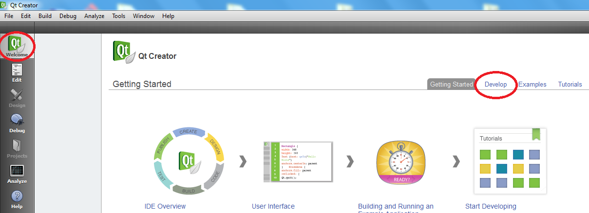
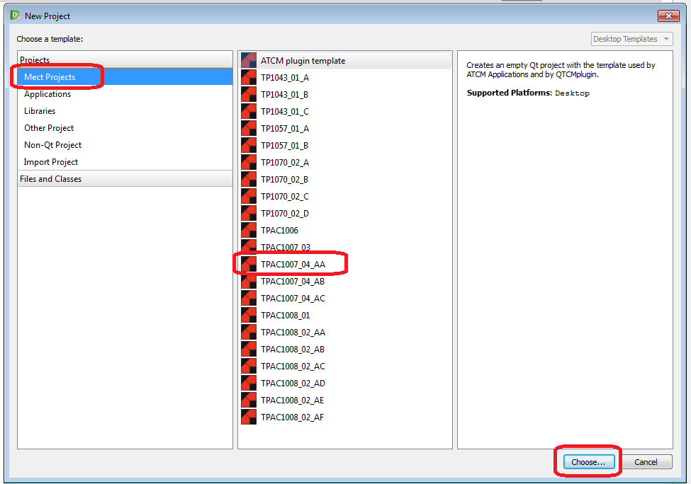
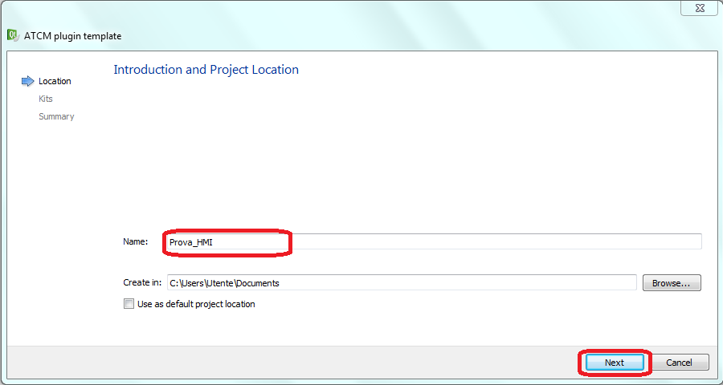
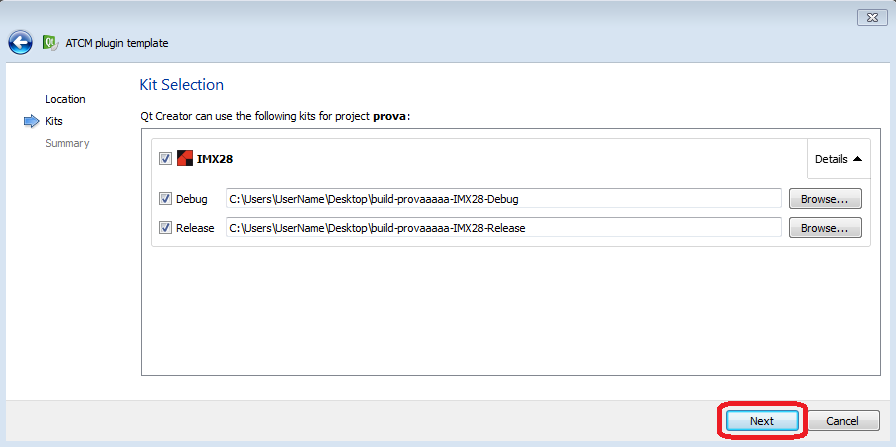
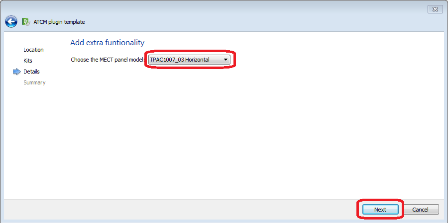
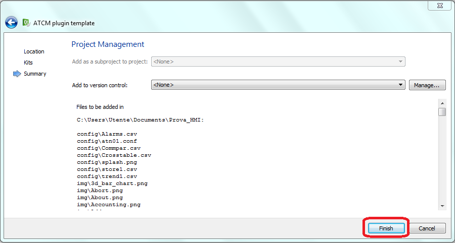

Para crear un nuevo proyecto gráfico, simplemente inicie Qt Creator y seleccione la pestaña “Develop”.

siga los siguientes pasos:
Seleccione “Create Project”.
Quando si abra la ventana en la figura, Seleccione “Mect Projects”, el producto y haga clic en “Choose”.

Ingrese el nombre del proyecto, sin espacios y sin caracteres especiales excepto underscore ‘_’.
ATENCIÓN: también la ruta de la carpeta del proyecto no debe contener espacios.

Seleccione “Next” en la solicitud de “kit selection”.

Seleccione la orientación del producto para el que desea realizar el proyecto.

En la pantalla “Project Management” haga clic en “finish”.

ATENCIÓN: en la carpeta del proyecto están las carpetas de “icons” y “fonts” donde puede insertar sus imágenes / fuentes para personalizar su aplicación.